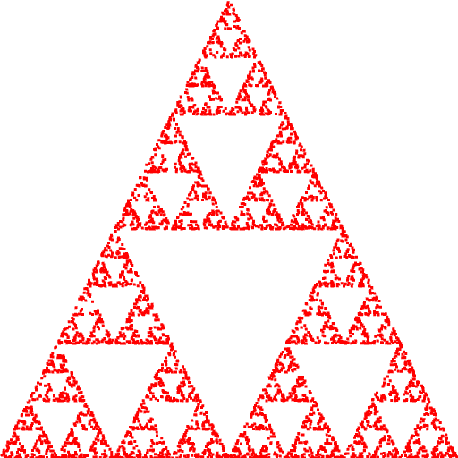

- Upprenlega skjalið
- Dæmi 1
- gasket1_dæmi1 Html File (og gasket1_dæmi1 js File)

- Ég sé ekkert hafa breist við að fær púntinn fyrir utan
- Dæmi 2
- gasket1_dæmi2 Html File (og gasket1_dæmi2 js File)
- 
- Punktarnir verða sterri
- Dæmi 3
- gasket1_dæmi3 Html File (og gasket1_dæmi3 js File)

- Það verða færri punktar og það verður erfiðar að sjá þríhirninginn
- ps. Ég setti border utanum myndina til að sýna að hún er þarna